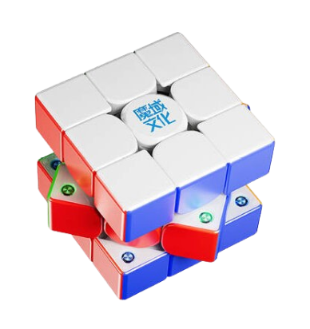
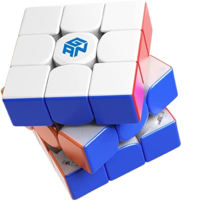
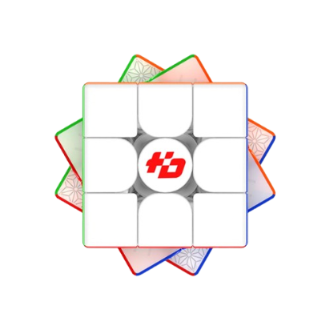

Discover 3 of the best speed cubes in the world.

This cube is known for its amazing corner cutting, strong magnets and quick turning.
Click here to check it out!"
While this cube is kind of old compared with its successors, it is still revolutionary by any means. One of the smoothest Maglev cubes on the market.
Click here to check it out!"
This was probably the first cube to ever include around 120 magnets in it. Because of its unique design and magnet placement, it is one of the fastest cubes, if tuned well. It is priced very competitively too.
Click here to check it out!"